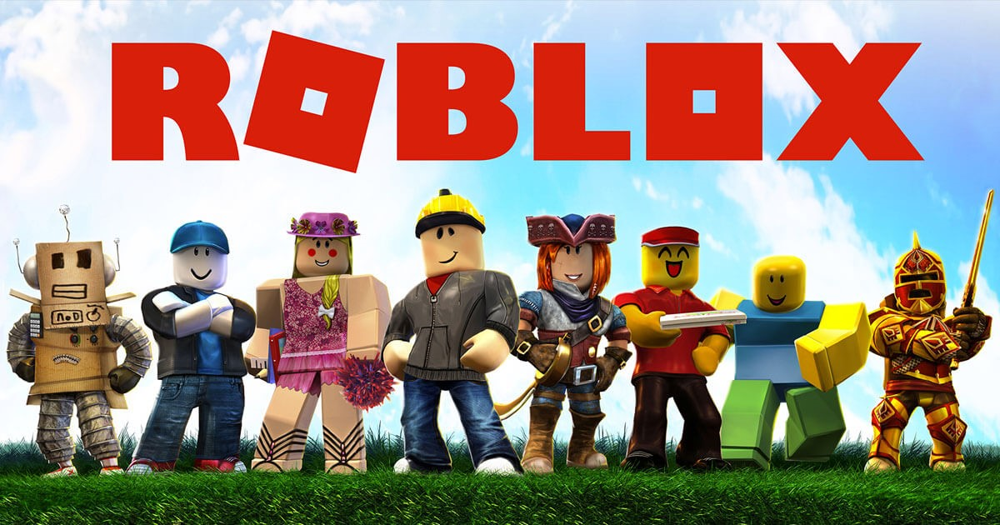

Roblox este o platformă de joc online și un sistem de creare a jocurilor dezvoltat de Roblox Corporation. Permite utilizatorilor să programeze jocuri și să joace jocuri create de alți utilizatori. Fondată de David Baszucki și Erik Cassel în 2004 și lansată în 2006, platforma găzduiește jocuri create de utilizatori cu mai multe genuri codate în limbajul de programare Lua. Pentru cea mai mare parte a istoriei lui Roblox, aceasta a fost relativ mică, atât ca platformă, cât și ca companie, din cauza lipsei de interes a cofondatorului Baszucki față de acoperirea presei și a fost „pierdută în rândul mulțimii” într-un număr mare de platforme lansate în jurul acelasi timp. Roblox a început să crească rapid în a doua jumătate a anilor 2010, iar această creștere a fost accentuată de pandemia COVID-19.
Roblox este gratuit, cu achiziții în joc disponibile printr-o monedă virtuală numită „Robux”. În august 2020, Roblox avea peste 164 de milioane de utilizatori activi lunar, jucându-l peste jumătate din toți copiii cu vârsta sub 16 ani din Statele Unite.
Roblox le permite jucătorilor să își creeze propriile jocuri folosind motorul propriu, Roblox Studio, care poate fi apoi jucat de alți utilizatori. Jocurile sunt codificate sub un sistem de programare orientat pe obiecte, utilizând limbajul de programare Lua pentru a manipula mediul jocului. Utilizatorii pot crea conținut care poate fi achiziționat prin achiziții unice, cunoscute sub numele de „abonamente de joc”, precum și microtransacțiuni care pot fi achiziționate de mai multe ori, cunoscute ca „produse pentru dezvoltatori” sau „produse”. Veniturile din achiziții sunt împărțite între dezvoltator și Roblox Corporation 30-70, în favoarea Roblox Corp. Majoritatea jocurilor produse folosind Roblox Studio sunt dezvoltate de copii și un total de 20 de milioane de jocuri pe an sunt produse folosind acesta.
